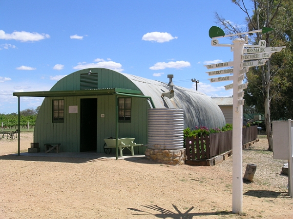

The Historical Village
Loxton Historical Village is one of Loxtons Premier historical attractions. A magnet for both locals and tourists alike, The range of displays and objects provide interest for all visitors. Some of the Historical Village Features are below
The Historical Village Entrance Building

(Photo Credit: Carla Magarey, 2011)
The entrance building to the to the Loxton Historical Village was a Rotary project completed in the mid 1970's. This was one of the many projects undertaken during the fifty years of community service Rotary celebrated recently.
The Nissen Hut
{kind=link}
(Photo: Peter Magarey, 2011)
This Nissen Hut at the Loxton Historical Village reflects an important part of our district’s history. A part of the Irrigation Settlement museum, it was officially opened 11th September 2001, ten years ago. In her speech at the opening, Barbara Orchard, Historian to the Australian War Memorial in Canberra, linked the Village’s new display with the streets in the Irrigation Settlement. She said, ‘Here in Loxton, South Australian nurses who died in WWII and one who survived the infamous Banka Island massacre, are commemorated every day. Streets bearing their names need no permission to visit, no key to open, are never fenced in. The Nurses’ Memorial here is both monumental and functional; it not only identifies places, it names people who are part of our heritage. It is ... unique among memorials to [War] service nurses.’ These roads served the area where the Nissen Huts served as homes to the Soldier Settlers from 1948.
Earlier Historical Village Photos


See the main Historical Village Website here